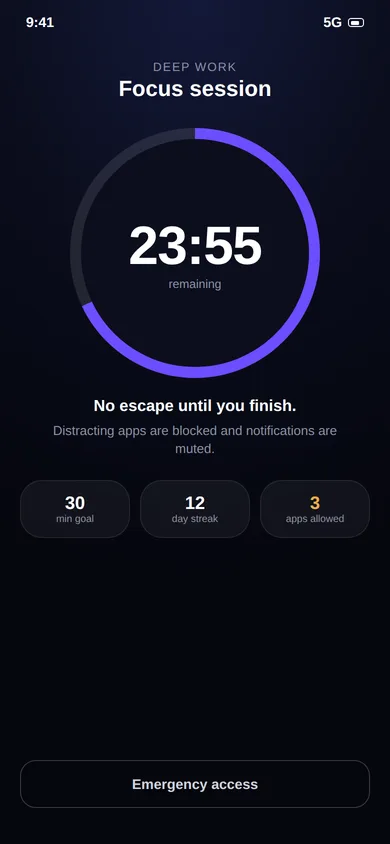

A screen time controller for Android that goes inside the app.
App time limits, timed focus sessions and schedules, plus per-video limits on Reels and Shorts. One free app, no account, nothing leaves your phone.

Four ways to take control.
Brainrot covers short-video feeds, other apps, timed sessions and schedules in one place.
Short-video limits
Daily caps on Reels, Shorts, Facebook Reels and Spotlight, counted per video.
App time limits
A daily time limit for any installed app, for the ones that aren't short-video feeds.
Focus sessions
Start a timed session that blocks distractions and mutes notifications.
Schedules
Recurring sessions for study hours, work blocks or a morning routine.
Essential apps
Phone, Messages and the apps you choose are always available, even mid-session.
Progress tracking
Focus time, completed sessions, success rate and a daily streak.
Plan once. Focus daily.
Set up a session like "Morning Study" or "Deep Work" once, choose the days and times, and Brainrot starts it on its own. During a session, distracting apps are blocked and only your essential apps stay available.
- Quick timer presets
- Recurring daily or weekday schedules
- Emergency access for real emergencies

Block distractions. Keep the essentials.
An all-or-nothing blocker is one you'll uninstall the first time you need to take a call. Brainrot keeps Phone and Messages available and lets you add a few more, so a focus session never leaves you unreachable.

Built-in tools are a good start.
Android's Digital Wellbeing has app timers and a Focus mode, and needs no extra permission. Where it stops is inside the app: it can't count Reels, and it can't close just the feed. See the full comparison.
Keep reading.
Guides and pages that go deeper on this topic.
Common questions.
Which apps can Brainrot limit?
Instagram Reels, YouTube Shorts, Facebook Reels and Snapchat Spotlight. On top of that, the app-limits feature lets you set a daily time limit on any app installed on your phone.
What are focus sessions?
A focus session is a timed block where distracting apps are blocked and only the essentials you choose (like Phone and Messages) stay available. You can start one on demand or schedule recurring sessions for study or work hours. See the screen time controller page.
Is Brainrot free?
Yes. Brainrot: Reel Limit is free to install from Google Play and there is no account to create.
Why does Brainrot need the Accessibility Service permission?
Android has no other supported way for an app to know that you swiped to the next Reel or Short. The Accessibility Service lets Brainrot see that a short-video screen is open and that a swipe happened. That is all it is used for. Brainrot does not read your messages, passwords or what you type, and nothing is sent to a server. Details are in the privacy policy.
Take your scroll back.
Free on Google Play. Set a limit in two minutes and keep every app you actually need.